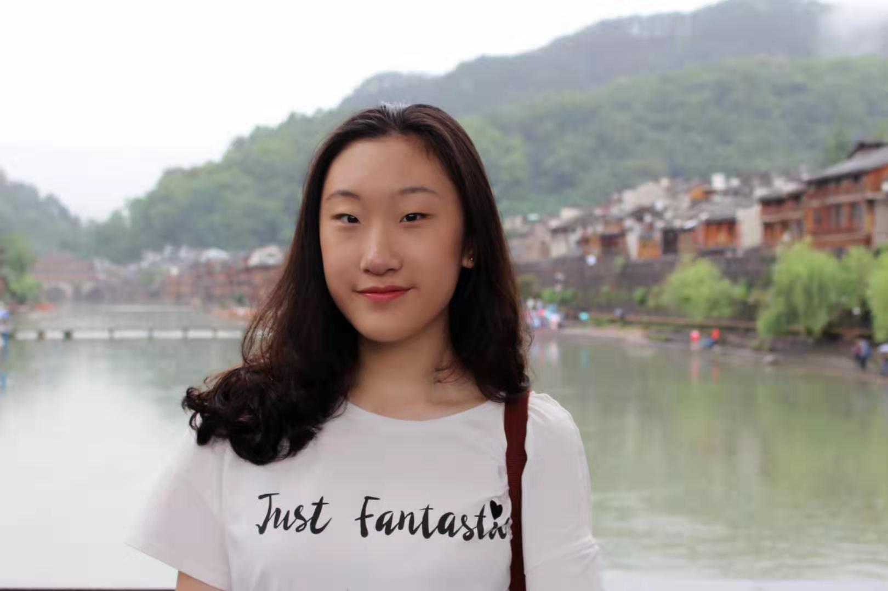
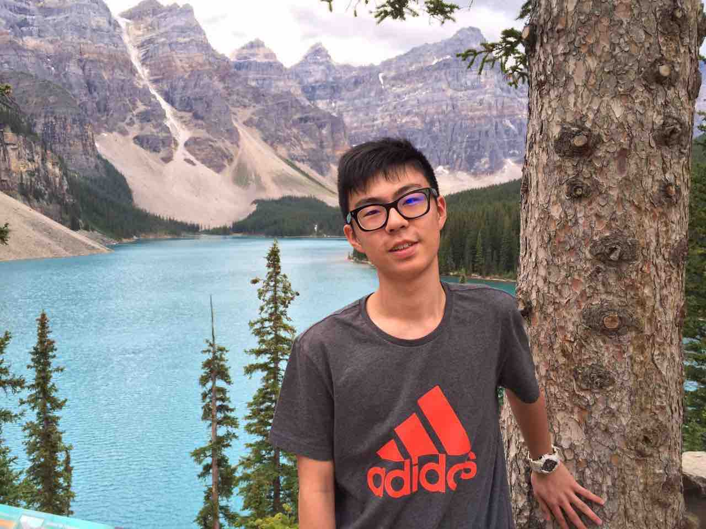
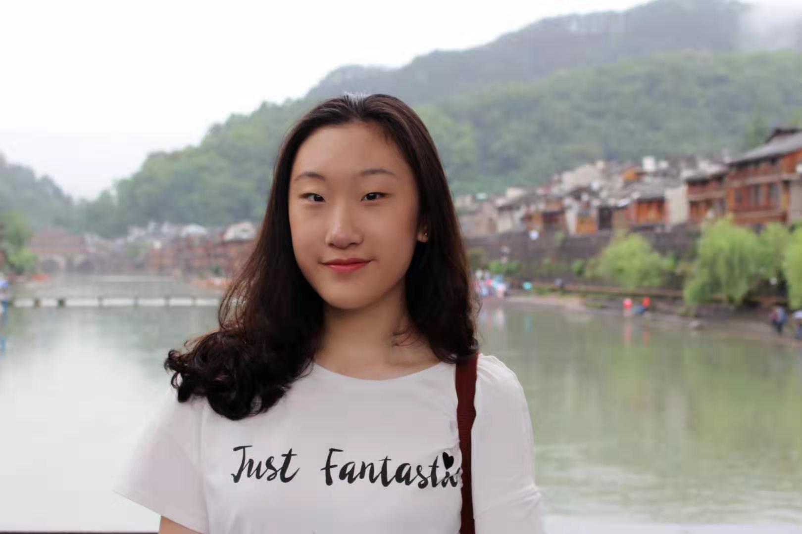
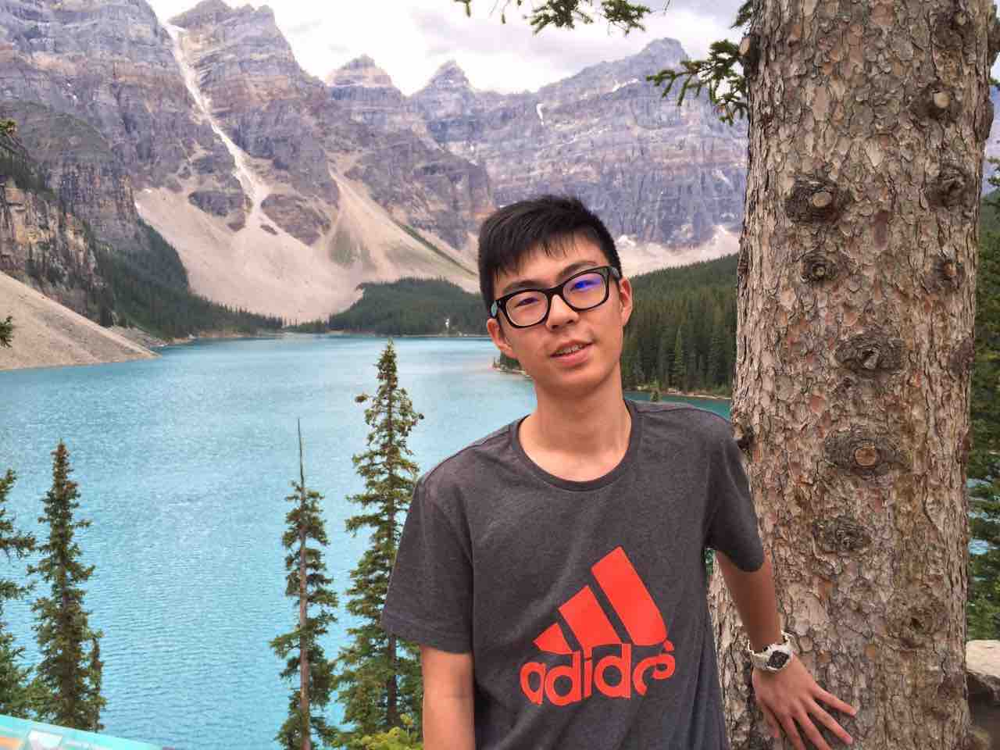

Meet the key players.
Co-Presidents
Kevin Hong
Co-President, 4th Year
Kevin is double majoring in Ethics, Society, & Law and Philosophy with a minor in the History and Philosophy of Science.
As co-president, Kevin works with the team to serve the TCCSA community and the college with collaborative events and initiatives.
An avid reader of Atlas Obscura, Kevin is predictably amused by Trinity’s evolving history, quirks, and perplexities.

Nancy Qiu
Co-President, 3rd Year
As this year's co-president, Nancy devotes to continue developing TCCSA a better platform for cultural dialogue through events and initiatives, while collaborating with various clubs at the Trinity College.
Nancy is currently a third year student from Vancouver, B.C. studying mathematics education at U of T. She enjoys folding origami and reading novels in her spare time.

Marketing
Lara E
Creative Director, 4th Year
As the Creative Director, Lara strives to create digital designs that
express the ideas of the association and promote our beliefs to students in need.
Lara studies Finance and Economics and is entering her fourth year at Trinity College. She looks forward to meeting new friends :) In her spare time, she likes illustration, anime and TV shows.
Nancy Mao
Marketing Director, 3rd Year
Nancy is an upcoming third year student specializing in psychology and
majoring in art history. This year, Nancy will be continuing taking the
role of Marketing Director of TCCSA, advertising club events through both
WeChat platform and Facebook. On her leisure time, Nancy is a tennis player,
a runner, and a guitar player. She is looking forward to meeting all upcoming
students in the Trinity College community.

Nadia Li
Webmaster, 2nd Year
As a second-year student studying computer science, Nadia sees UofT as
a place where we can encounter challenges and frustration but also get
rewarding experience. Feel free to come to TCCSA and chat with us -
maybe you’ll meet some cool people and have some fun. (Btw, if you have
any suggestions on how to improve this website, please tell her!)
Operations
Yvonne Rao
Operations Director, 2nd Year
As this year’s operations director, Yvonne is excited to help the
team in successfully meeting its goals. She is a passionate individual
especially when it involves TCCSA cooperating with with other student
organizations at Trinity. Currently studying mathematics and statistics,
Yvonne enjoys dancing and has a sincere love for baking. She looks forward
to meeting fresh faces and seeing TCCSA continuing to thrive next year.

John Song
Operations, 3rd Year
John (Qien) Song is currently a 3rd year student planning to
study in the Mathematics & Economics specialist program. He was
one of the First Year Representatives in 2017-2018. He is also
very interested in history and geography of different countries.
He sincerely hopes that he can bring the Chinese community more
fun and engaging activities in the coming year.

Kevin Hong
Co-President, 4th Year
Kevin is double majoring in Ethics, Society, & Law and Philosophy with a minor in the History and Philosophy of Science.
As co-president, Kevin works with the team to serve the TCCSA community and the college with collaborative events and initiatives.
An avid reader of Atlas Obscura, Kevin is predictably amused by Trinity’s evolving history, quirks, and perplexities.
Nancy Qiu
Co-President, 3rd Year
As this year's co-president, Nancy devotes to continue developing TCCSA a better platform for cultural dialogue through events and initiatives, while collaborating with various clubs at the Trinity College.
Nancy is currently a third year student from Vancouver, B.C. studying mathematics education at U of T. She enjoys folding origami and reading novels in her spare time.
Marketing
Lara E
Creative Director, 4th Year
As the Creative Director, Lara strives to create digital designs that
express the ideas of the association and promote our beliefs to students in need.
Lara studies Finance and Economics and is entering her fourth year at Trinity College. She looks forward to meeting new friends :) In her spare time, she likes illustration, anime and TV shows.
Nancy Mao
Marketing Director, 3rd Year
Nancy is an upcoming third year student specializing in psychology and majoring in art history. This year, Nancy will be continuing taking the role of Marketing Director of TCCSA, advertising club events through both WeChat platform and Facebook. On her leisure time, Nancy is a tennis player, a runner, and a guitar player. She is looking forward to meeting all upcoming students in the Trinity College community.
Nadia Li
Webmaster, 2nd Year
As a second-year student studying computer science, Nadia sees UofT as a place where we can encounter challenges and frustration but also get rewarding experience. Feel free to come to TCCSA and chat with us - maybe you’ll meet some cool people and have some fun. (Btw, if you have any suggestions on how to improve this website, please tell her!)
Operations
Yvonne Rao
Operations Director, 2nd Year
As this year’s operations director, Yvonne is excited to help the
team in successfully meeting its goals. She is a passionate individual
especially when it involves TCCSA cooperating with with other student
organizations at Trinity. Currently studying mathematics and statistics,
Yvonne enjoys dancing and has a sincere love for baking. She looks forward
to meeting fresh faces and seeing TCCSA continuing to thrive next year.

John Song
Operations, 3rd Year
John (Qien) Song is currently a 3rd year student planning to
study in the Mathematics & Economics specialist program. He was
one of the First Year Representatives in 2017-2018. He is also
very interested in history and geography of different countries.
He sincerely hopes that he can bring the Chinese community more
fun and engaging activities in the coming year.

Yvonne Rao
Operations Director, 2nd Year
As this year’s operations director, Yvonne is excited to help the team in successfully meeting its goals. She is a passionate individual especially when it involves TCCSA cooperating with with other student organizations at Trinity. Currently studying mathematics and statistics, Yvonne enjoys dancing and has a sincere love for baking. She looks forward to meeting fresh faces and seeing TCCSA continuing to thrive next year.
John Song
Operations, 3rd Year
John (Qien) Song is currently a 3rd year student planning to study in the Mathematics & Economics specialist program. He was one of the First Year Representatives in 2017-2018. He is also very interested in history and geography of different countries. He sincerely hopes that he can bring the Chinese community more fun and engaging activities in the coming year.
Alumni Representatives
Yiran (Katherine) Li
Alumni
Yiran (Katherine) Li graduated in 2019 with a double major in Socio-Cultural
Anthropology and History of Art. She is one of the founding team members of
TCCSA and was part of the exec team throughout her undergrad life. Yiran is
now taking care of the Chinese Alumni Oral History Project with TCCSA and
Trinity College Archive. In her spare time, Yiran likes going to museums and
watching films.
Charlie Huang
Alumni
Charlie (Chengcheng) Huang studies in Financial Economics Specialist
Program. In his spare time he enjoys road cycling, modern musics and study
of various markets. He is currently in Research Opportunity Program on the
subject of behavioral economics and wishes to become an economist or
professional manager.
黄成诚就读金融经济系（Financial Economics），2020届，平时喜欢自行车运动， 现代音乐以及各类市场研究。目前在学校官方研究项目研究行为经济学， 未来希望能成为一名经济学家或职业经理人。
Bonnie Yang
Alumni
As previous co-president, Bonnie is a
devoted individual who is keen on making TCCSA
even more diverse and attentive to the needs of all students.
She is currently a fourth year student with a specialist in Mathematical
Application and a major in Statistics. She hopes her
experiences in academia and the college community can provide
guidance to incoming students and those with similar
aspirations.

Past Execs
Michael Wong, Webmaster 2018-2019
Barry Feng, Operations 2018-2019
Yiran (Katherine) Li
Alumni
Yiran (Katherine) Li graduated in 2019 with a double major in Socio-Cultural Anthropology and History of Art. She is one of the founding team members of TCCSA and was part of the exec team throughout her undergrad life. Yiran is now taking care of the Chinese Alumni Oral History Project with TCCSA and Trinity College Archive. In her spare time, Yiran likes going to museums and watching films.
Charlie Huang
Alumni
Charlie (Chengcheng) Huang studies in Financial Economics Specialist
Program. In his spare time he enjoys road cycling, modern musics and study
of various markets. He is currently in Research Opportunity Program on the
subject of behavioral economics and wishes to become an economist or
professional manager.
黄成诚就读金融经济系（Financial Economics），2020届，平时喜欢自行车运动， 现代音乐以及各类市场研究。目前在学校官方研究项目研究行为经济学， 未来希望能成为一名经济学家或职业经理人。
Bonnie Yang
Alumni
As previous co-president, Bonnie is a
devoted individual who is keen on making TCCSA
even more diverse and attentive to the needs of all students.
She is currently a fourth year student with a specialist in Mathematical
Application and a major in Statistics. She hopes her
experiences in academia and the college community can provide
guidance to incoming students and those with similar
aspirations.